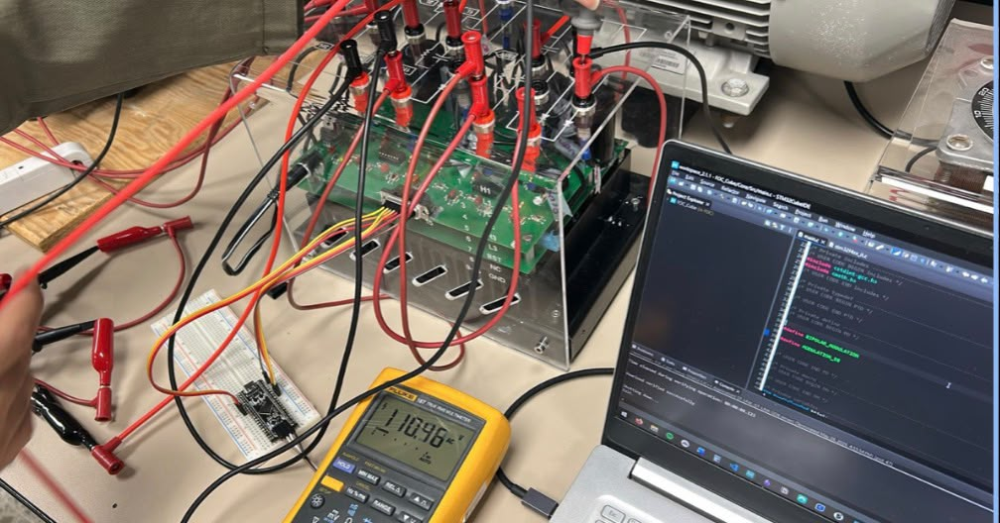
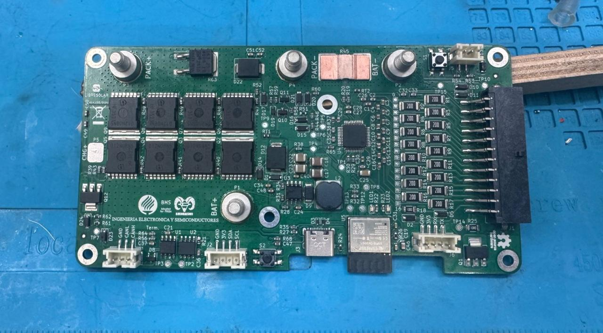

Building the circuits that move energy — from silicon to the motor shaft.
Electronics engineering student at Tecnológico de Monterrey, preparing for a career in the energy sector through power electronics and hardware design. I design, validate, and test real systems — from firmware shields to power inverters — inside industry teams, not just the lab.
I'm an electronics engineering student at Tecnológico de Monterrey (GPA 3.8/4.0, Full Academic Leadership Scholarship), specializing in power electronics and hardware design — building toward a career in the energy sector.
This Fall I'm on exchange at HKUST, taking IC Design, FPGA, and Transnational Legal Issues & Dispute Settlement — a deliberate mix of deep technical specialization and the international/legal literacy that comes with working across borders. I've also started early-stage power electronics research in Prof. Wang Ping's lab.
Most of what's on this site comes from working inside real engineering teams — validating firmware at Carrier, leading power electronics for RoBorregos' competition robot, and building a three-phase motor inverter for AMI Automation.
At the same time, I represent Mexican industry abroad: as the first fully sponsored student selected for the PLEI Asia Mission, I evaluated 30+ potential suppliers across Asia for DYL Medic (visiting 6 in person) and studied how a leading nearshoring agency operates in the Philippines on behalf of Intugo — technical preparation and international groundwork, moving together.
FOUNDATION
B.S. Electronics Engineering — Tecnológico de Monterrey (Expected Dec 2027)
EMBEDDED
Two internships at Carrier — validation automation, then embedded test & controls
AMI Automation needed a variable frequency drive (VFD) approach for modernizing industrial motor control — running a three-phase induction motor with adjustable speed from a standard single-phase supply, in line with their process efficiency standards.
Objective
Build a VFD that controls an AC induction motor using scalar V/f control through a two-level Voltage Source Inverter (VSI), keeping the volts-per-hertz ratio constant to preserve motor flux and torque capability across the speed range.
Design
Single-phase diode-bridge rectifier with capacitor filtering to establish a stable DC bus, feeding a two-level, six-switch three-phase inverter bridge. Three sinusoidal reference signals, phase-shifted 120° apart, are generated in firmware and used to modulate the bridge via S-PWM.
Hardware
Target motor: 2 HP induction motor, nameplate rated 220–230/460 VAC, 60 Hz, 3465 RPM, 80% max efficiency. Diode-bridge rectifier + DC bus capacitors, six-switch inverter bridge (gate signals on PA8–PA10 / PB13–PB15), and a potentiometer feeding the ADC as the speed command input.
Software
STM32 (Blackpill) firmware in C using the HAL library. A TIM1 timer interrupt runs every Ts = 100 µs, computing three sinf()-based phase references with a soft-start ramp (0.001→1.0) that gradually scales amplitude on power-up to protect the power stage. Bipolar modulation maps the [-1,1] sine values to the timer's compare range to set duty cycle per channel. Separately, the main loop reads the ADC, maps the 12-bit value to a 5–60 Hz range, and applies a first-order low-pass filter to avoid abrupt frequency jumps that could destabilize the motor.
Control Law
For this motor, the target V/f ratio is k = V_nom / f_nom = 220 V / 60 Hz = 3.66 V/Hz — the value the control aims to hold constant so the stator flux (and therefore torque) stays consistent across the operating frequency range.
Test
Open-loop bench tests varying modulation index and commanded frequency, measuring both inverter-side (motor) and grid-side (line) voltage, current, and power.

BENCH VALIDATION — six-switch bridge, STM32 Blackpill control, Fluke reading 110.96V on the rectified DC bus
Results & Learnings
At m=0.98 / 36 Hz the inverter delivered 109 V RMS / 1.6 A RMS, driving the motor to 2152 RPM; scaling down to m=0.25 / 9 Hz produced 56 V RMS / 1.1 A RMS at 538 RPM — confirming speed control across the range. Grid-side power factor measured low (0.20–0.26), expected for an uncorrected single-phase rectifier front-end. Critical review of the implementation found the modulation index was held constant per test point rather than scaling continuously with commanded frequency — the fix identified for a fully compliant closed-loop V/f controller in the next iteration.
Motor
2 HP / 220V / 60Hz
V/f Ratio
3.66 V/Hz
Sample Time
Ts = 100 µs
Max Output
109 VRMS @ 36Hz
Team project (Servicio Social, Análisis de Sistemas Energéticos) with Patricio González Salinas, Ángel Eduardo López Solís & Juan Guillermo Montoya Oviedo — for AMI Automation.
P.02STM32H563ZI Test Shield — CarrierSTM32FreeRTOSAltium+
In plain terms: a test bench that pretends to be a real air-conditioning sensor, so new firmware can be checked before it ever touches a real HVAC unit.
PROBLEMOBJECTIVEDESIGNHARDWARESOFTWARERESULTS
Problem
Validating embedded firmware against real residential HVAC sensor behavior normally requires physical field hardware, which slows down the test cycle for the Software & Controls team.
Objective
Build a shield that replicates residential AC external sensor inputs — including 24VAC and PWM signal generation — so firmware can be validated on the bench.
Design & Hardware
Designed a custom Altium shield for the STM32H563ZI, with circuitry to generate 24VAC and PWM signals that emulate the electrical behavior of real field sensors.
Software
Firmware built on FreeRTOS, structuring signal generation and monitoring as concurrent tasks to mirror real-time field conditions.
Results
Gave the Independent Test & Validation team a repeatable bench setup to validate firmware behavior without needing physical field rigs — cutting roughly 3 hours of manual setup per test cycle by replacing voltage-divider/potentiometer rigs with a digital, repeatable signal source.
MCU
STM32H563ZI
RTOS
FreeRTOS
Signals
24VAC / PWM
Team
Carrier — S&C CoE
Setup Time Saved
~3 hrs / test
P.031200W Power Distribution & BMS — RoBorregosBMSPower Dist.1st Place+
In plain terms: kept a competition robot's batteries and power supply from failing mid-match.
PROBLEMOBJECTIVEDESIGNHARDWARERESULTS
Problem
The @HOME League competition robot draws high, variable current across multiple subsystems, and unmanaged battery charging risked mid-match failures.
Objective
Lead the electronic design of a reliable 1200W power distribution and battery charging system for the national and international competition robot.
Design & Hardware
Built on an adapted LibreSolar open-source BMS design — assembled the board and modified both firmware and component placement to integrate with the distribution board and fit RoBorregos' FRIDA @HOME robot, working within an 8-engineer team to coordinate subsystem power budgets.

BMS + POWER DISTRIBUTION BOARD — pack/battery terminals, MOSFET switching bank, cell-balance resistor array, and USB-C/BLE interface
Results
The system earned 1st Place Nationally at the Mexican Tournament of Robotics (April 2026) with zero power-related failures across the entire competition — qualifying rounds and finals included.
Power
1200 W
Result
1st — National
Role
Electronics PM
Reliability
0 Failures
P.04DC Motor Position Control — DIRAMPID / PITI F28379DZiegler-Nichols+
In plain terms: taught a small industrial motor to turn to the exact angle it's told, quickly and without shaking itself apart.
Precise, reliable position control is a baseline requirement across robotics, manufacturing, and medical devices — the challenge was building that capability from scratch on a real DC gearmotor, not just in simulation.
Objective
Take a DC motor from mathematical model to a working closed-loop position controller: characterize the plant, design and simulate a digital PID, tune it, then deploy and validate it on hardware.
Design
Modeled the motor with its electrical (V = L·di/dt + Ri + Ke·ω) and mechanical (J·dω/dt + Bω = Kt·i − Tload) equations, characterizing armature resistance, torque/back-EMF constant, and viscous friction experimentally. Built the control loop in Simulink using C2000-specific blocks: an eQEP block to read the encoder, a discrete PID(z), and dual ePWM outputs (one inverted) to drive the H-bridge in both directions.
Hardware
GA25-370 DC gearmotor with a Hall-effect encoder (~2200 pulses/revolution), an L298H H-bridge driver, and a TI LAUNCHXL-F28379D as the controller.
Tuning
Started from Ziegler-Nichols gains derived from a simulated critical gain/period — but on real hardware those values oscillated the system almost immediately. Manual re-tuning converged on Kp=400, Ki=150; the derivative term was dropped entirely after it injected significant noise into the control signal, simplifying the design from PID to PI for a cleaner, stable response.
Results & Limitations
Simulation confirmed the control approach: stable convergence to the reference with minimal steady-state error. On hardware, the PI re-tune held the motor at reference angle without the oscillation the theoretical PID gains caused — but full experimental validation (logged speed/position data under load) was left incomplete due to development-board upload time eating into the testing window. That gap — theoretical gains failing in practice, then debugging why — was the most useful part of the project.
In plain terms: a smart fuse for car headlights that senses electrical and heat faults, logs them, and reacts before they cause damage.
PROBLEMOBJECTIVEDESIGNHARDWARESOFTWARETESTRESULTS
Problem
Commercial automotive ECUs are complex and costly to use during early prototyping, leaving a gap for an accessible platform that can detect faults in LED lighting modules, log events, and apply basic functional-safety responses without specialized equipment.
Objective
Build a diagnostic ECU prototype that monitors voltage, current, and temperature across LED channels; detects overvoltage, undervoltage, open-circuit, short-circuit, and overtemperature conditions; logs faults persistently; and reports status over UART.
Design
A PIC18F45K50 was originally specified, but an irreparable configuration fault and lack of stock forced a migration to an ATmega328P (Arduino UNO) mid-project — chosen for faster integration, immediate availability, and sufficient ADC/UART capability without compromising the diagnostic scope.
Hardware
Voltage-divider sensing network feeding the ADC to monitor 4 LED channels plus supply voltage; a thermistor (10 mV/°C) for thermal monitoring; a 4×4 matrix keypad for user interaction; BJTs (2N3904/2N3906) and an LM317 regulator supporting the sensing/driving circuitry. Schematic and layout verified in Proteus before physical build.
Software
Firmware in C (AVR-GCC, direct register access) at 16 MHz: round-robin ADC sampling across 6 channels, Timer0-driven software PWM for LED channel control, full-duplex UART at 115200 bps (8N1) for diagnostic reporting, and persistent fault counting via EEPROM read/write.
Test
Unit tests validated each peripheral in isolation (UART framing, ADC + thermistor response, GPIO/keypad); integration tests then confirmed the full diagnostic chain end-to-end — physically disconnecting an LED channel and verifying detection, EEPROM logging, PWM shutdown, and UART reporting all fired correctly together.
Results & Learnings
All functional requirements passed: correct detection of overvoltage/undervoltage/open/short/overtemperature, stable UART reporting with no corrupted frames, and reliable EEPROM fault persistence across power cycles. The team documented the PIC18→ATmega328P migration transparently rather than concealing the setback — a real example of adapting scope under a hardware failure without missing the challenge deadline.
In plain terms: figured out exactly how many coil turns, what wire thickness, and what core material to use to build a custom inductor that meets Bendix's real specs — without building and testing dozens of physical prototypes first.
PROBLEMOBJECTIVEMETHODRESULTS: TURNS & MATERIALRESULTS: CURRENT & FREQUENCYRECOMMENDATIONS
Problem
Bendix needed a custom inductor meeting specific circuit requirements — inductance and a 1.5A nominal continuous current without core saturation — where off-the-shelf parts didn't line up cleanly with the target electrical behavior.
Objective
Use finite-element simulation to characterize how turns count, wire gauge, and core material affect magnetic flux density, inductance, resistance, and resonant frequency of a toroidal inductor — isolating which parameters actually matter for Bendix's spec.
Method
Built a fully parametric toroidal coil model in COMSOL Multiphysics (baseline: 20 turns, 0.75mm wire, 12.7mm OD / 7.62mm ID / 4.75mm height core) and ran stationary magnetic-field and circuit-coupled studies, changing exactly one variable at a time — turns (10–40), wire radius (0.75mm vs 0.5mm), and core material (Alloy Powder µr=1000, Ferrite µr=5000, an intermediate µr=400) — then swept frequency from 1–10MHz to characterize impedance and resonance.
Results: Turns & Material
Inductance scaled directly with both turns and core permeability: going from 10 to 35 turns raised inductance from 0.28mH to 3.5mH on the original core, while simply swapping to ferrite (µr=5000) at a fixed 20 turns raised it from 1.15mH to 5.76mH — a bigger jump than adding 15 more turns. Halving the wire radius (0.75mm → 0.5mm) roughly doubled coil resistance (0.014Ω → 0.032Ω) while barely moving inductance, confirming wire gauge mainly trades off resistive loss, not energy storage.
Results: Current & Frequency
A circuit-coupled simulation (1V source, 100mΩ series resistance) drove the 10-turn coil to 9.3A structurally — well above Bendix's 1.5A nominal spec — and the flux simulation confirmed the core stayed far from saturation at that operating current. Higher-inductance configurations pushed the resonant frequency lower: ~9.5MHz at 10 turns vs ~2MHz at 35 turns, a direct trade-off to weigh against Bendix's frequency requirements.
Recommendations
To raise inductance: use a high-permeability, low-conductivity core (ferrite) and/or more turns. To raise resonant frequency instead: do the opposite — fewer turns or lower-permeability core. To reduce impedance: more turns, thinner wire, or a lower-permeability core. All of it buildable with industry-standard parts — ferrite cores and 0.5–2mm wire gauges.
In plain terms: built a field sensor box for farms that talks to the cloud three different ways, so it never fully loses connection — and when one of those ways badly underperformed, figured out exactly why with the math, not guesswork.
A field interview with a farmer managing ~400 hectares in northern Mexico surfaced the real pain point: separate, incompatible vendor apps for weather stations, RTK drones, and soil sensors — no single view of the field.
Objective
Build a field-deployable IoT node consolidating environmental, power, inertial, and GPS data into one cloud dashboard, resilient to the patchy connectivity typical of large rural properties.
Design
A two-node architecture (transmitter + receiver) around the Seeed XIAO ESP32-S3, with three parallel wireless channels chosen for different range/connectivity scenarios: ESP-NOW for short-range peer-to-peer, LoRa at 915MHz for long range, and 2G/GPRS as a cloud-uplink fallback. A single byte-identical 71-byte payload struct is transmitted across all three, and AES-128 encryption is applied at the ESP-NOW and LoRa layers.
Hardware
Custom two-layer KiCad PCB integrating a BME280 (temp/humidity/pressure), BH1750 light sensor, BNO085 9-DoF IMU for tamper detection, INA219 power monitor, RCWL-9200 ultrasonic sensor, NEO-6M GPS, RFM69HW LoRa radio, SIM800L 2G module, capacitive soil moisture sensor, OLED display, and an OV2640 camera running an on-device Edge Impulse classifier for intruder detection.
Software
PlatformIO/Arduino firmware with a shared packed struct header ensuring byte-level interoperability across channels, feature flags for compile-time configuration, per-channel link-health monitoring (failure counters and timeouts), and OTA firmware updates over Wi-Fi — letting field nodes be reprogrammed without physical access.
Results
ESP-NOW hit 100% packet delivery at 15m (vs. a 90% target) with sub-5ms latency. Cellular uplink reliably delivered all 11 variables to the Ubidots dashboard, including GPS rendered as a live map pin. LoRa, however, only achieved reliable delivery to ~1m — badly missing its 100m target.
Diagnosis & Learnings
Rather than leaving the LoRa failure unexplained, the team used the Friis transmission equation and reflection-coefficient math to show the untuned default whip antenna caused ~20dB of mismatch loss — collapsing the theoretical 3.2km range down to the ~1m measured in the lab. That root-cause diagnosis, not just the failure itself, is the most valuable part of the project: it turns a disappointing result into a specific, quantified fix (a tuned λ/4 monopole) for the next hardware revision.
In plain terms: designed a solar-plus-battery system to replace unreliable grid power and diesel for farm water pumps in the desert — then worked out the real math on when it actually pays for itself.
Agricultural groundwater pumping in Sonora, Mexico faces a triple bind: economic exposure to CFE's fluctuating agricultural tariff, technical instability from rural distribution lines causing severe voltage sags, and environmental cost from diesel backup generation — all in a region averaging 6.0 peak sun hours, ideal for distributed solar generation.
Electrical Design
Base system: a 25 HP (18.65 kW) three-phase induction motor on an 80m-deep submersible pump. Direct starts draw up to 7× rated current, hurting power factor and wasting energy as I²R heat — solved with a VFD using scalar V/f control plus a dynamic MPPT algorithm. Accounting for 88% motor efficiency (NEMA MG-1) and 96% VFD conversion efficiency: P_AC = 18.65kW / 0.88 = 21.19kW, and P_DC(bus) = 21.19kW / 0.96 = 22.08kW.
BESS Sizing
Sized a LiFePO4 battery bank for 3 hours of autonomy during low-irradiance or night operation, at 80% depth-of-discharge and 90% round-trip efficiency: E_batt = (22.08kW × 3h) / (0.80 × 0.90) = 91.98 kWh — managed by a Master-Slave BMS architecture for thermal control and cell balancing under desert conditions.
PV Sizing
Total daily energy need is direct pumping (22.08kW × 6h = 132.46kWh) plus BESS recharge (22.08kW × 3h / 0.90 = 73.59kWh) = 206.05 kWh/day. Applying a 20% derate for thermal losses and dust: P_array = 206.05kWh / (6h × 0.80) = 42.93 kWp — spec'd as 78 modules of 550Wp in a 6S13P configuration.
Land & Governance
The 42.93 kWp array occupies ~400 m² — about 4% of one hectare — mounted on elevated agrivoltaic structures (2.8m clearance) that let tractors pass underneath while their partial shade reduces soil evapotranspiration and crop heat stress. Adoption is structured through a stakeholder matrix: producers via a community trust funded by fuel/tariff savings, CFE Distribución via a net-metering interconnection agreement, and CONAGUA using the solar capacity limit as a natural brake against aquifer overexploitation.
Financial Viability
Estimated CapEx of $1,250,000 MXN (the LFP battery bank alone is 46% of that) cuts annual OpEx from $230,000 MXN (diesel, maintenance, low-power-factor penalties) to $45,000 MXN — a simple payback of 6.75 years and a projected 15-year IRR of 14.2%, beating Mexico's reference TIIE rate. Applying available FIDE/FIRA/SADER green subsidies (up to 40% non-reimbursable) drops net CapEx to $750,000 MXN and payback to 4.05 years.
In plain terms: gave a small rover a working sense of "where am I and which way am I facing" using only onboard sensors — no GPS — the same problem a lunar rover would face.
USE CASEHARDWAREDSP PIPELINECOMMUNICATIONVALIDATION
Use Case
Framed around a lunar rover scenario: no GPS or external positioning infrastructure available, so the vehicle must estimate its own position and orientation purely from onboard inertial and visual sensing.
Hardware
Dual-core ESP32-S3 (240MHz) running FreeRTOS, a BNO085 9-axis IMU with an internal Kalman filter delivering stable orientation quaternions directly, and an OV3660 camera for visual flow — sampled over I2C at 100Hz. Core 0 was dedicated almost entirely (95% load) to camera capture and processing, with Core 1 handling the remaining lighter tasks (20% load). The chassis went through three design iterations, from a vertical PCB-integrated board to a final rover-style structure built for stable mounting on uneven ground.
DSP Pipeline
Synchronous I2C acquisition at 100Hz → digital filtering to remove bias and high-frequency noise → orientation via BNO085 quaternions → optical-flow motion estimation using a Sum-of-Absolute-Differences (SAD) algorithm over 24×24 pixel windows → sensor fusion via an Extended Kalman Filter combining inertial prediction with visual correction → Zero-Velocity Update (ZUPT, 0.20 m/s² threshold) to suppress static drift → 2D position integration with local-to-global coordinate transformation via yaw angle.
Communication
A 59-byte payload (position, velocity, yaw, optical-flow validity flag, battery, anomaly flags) is transmitted via ESP-NOW at 10Hz to a Python-based base station, which drives a MATLAB digital twin visualizing the rover's live trajectory, heading history, and system health (SNR, anomaly detection).
Validation
End-to-end ESP-NOW latency stayed under 20ms — well inside the 100ms IEC 61588 requirement — with stable 10Hz transmission and no significant packet loss. On a 30×30cm square trajectory test (120cm total perimeter), accumulated position error landed right at the 5% acceptance threshold the team had set for itself, and the ZUPT algorithm correctly prevented drift while the rover sat stationary between runs.
Microcontrollers, protocols, and validation tooling from internships and coursework.
[MUX]
RS-485 Multiplexer — Carrier
Custom Altium PCB using an ATmega328 and DG409 analog multiplexer, paired with a C# GUI to evaluate real-time data from boards sharing the same address.
[RCA]
PCB Root Cause Analysis — Carrier
Diagnosed and resolved PCB failures that had gone unsolved for over a year, proposing component and design changes and replicating legacy failure modes.
[TEL]
Vehicle Telemetry — EcoShell Tec Racing
Built a telemetry system over UART and I2C with ESP32, enabling real-time vehicle status acquisition and post-run data analysis in MATLAB.
[AMP]
Analog Signal Conditioning — Acuity Brands
Op-amp based conditioning circuit to control a motor-driven window blind — no embedded firmware, just gain, filtering, and stability design.
04 — Where This Is Heading
Power & Energy Systems
Power electronics and magnetics work, with energy systems as the next step.
[IND]
Custom Inductor — Bendix (COMSOL)
See Project P.06 above — full parametric study of turns, wire gauge, and core material for a toroidal inductor meeting Bendix's current and inductance specs.
[INV]
3-Phase Motor Inverter
See Project P.01 above — a single-phase to three-phase inverter built this semester, the most direct power-electronics case study on this site so far.
[LAB]
HKUST Research — Prof. Wang Ping's Lab
Early-stage power electronics research underway as part of my exchange semester — details to follow as the work develops.
[BESS]
Hybrid PV + BESS Microgrid — Sonora
See Project P.08 above — full techno-economic design of a solar-plus-battery pumping microgrid, from VFD/MPPT sizing to payback and IRR.
05 — Beyond the Bench
Global Reach
Technical preparation and international groundwork, moving together.
[$]
Director of Finance — RoBorregos
Lead a 10-member team in fundraising and budget planning: $700K+ MXN total budget managed, $400K+ MXN in corporate sponsorships secured for national and international robotics competitions.
[SRC]
Supplier Sourcing — DYL Medic (PLEI Asia Mission)
Evaluated 30+ potential mobility-aid component suppliers across Asia for DYL Medic, a Mexican mobility-aid manufacturer, visiting 6 in person as the first fully sponsored student selected for the mission.
[PH]
Market Study — Intugo (Philippines)
Studied how a leading shelter/nearshoring agency operates in the Philippines — the market specifically assigned for this engagement — surfacing insight to inform Intugo's future collaboration there.